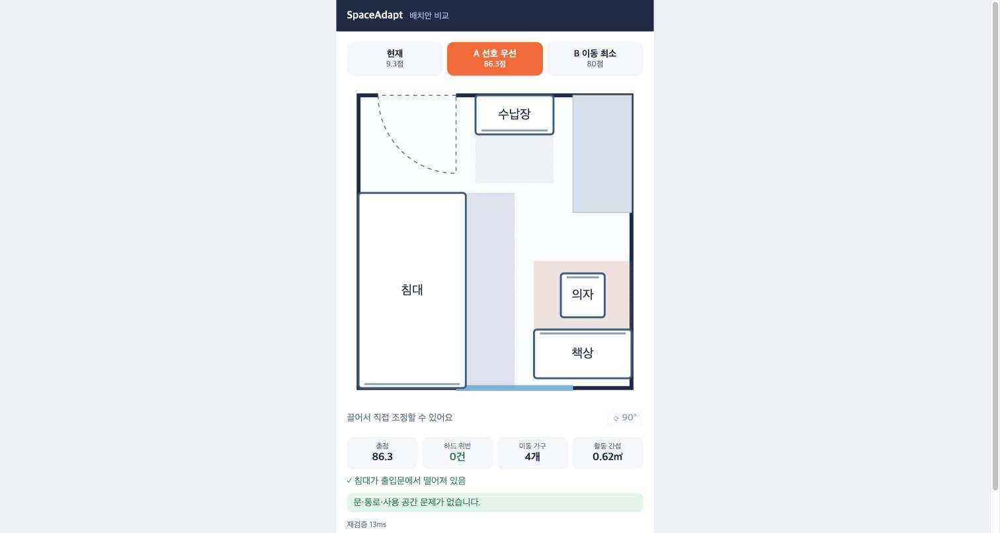

방 사진을 올리면 AI가 생활 흔적에서 숨은 불편을 짚어 질문하고, 충돌·통로·문 개폐 검증을 통과한 가구 배치안 2개를 모바일 2D로 제안하는 서비스
한 방에서 수면·업무·취미가 겹치지만, 불편의 원인과 무엇부터 옮길지 스스로 알기 어렵다. 이미지 중심 인테리어 추천은 실제 치수·문·동선을 검증하지 않는다.
VLM이 사진 속 생활 단서를 읽고 → 에이전트가 확인 질문 2~3개로 우선순위를 확정 → 공간 플래너가 물리 제약을 검사한 배치안 2개 생성 → 터치 수정 시 즉시 재검증.
사진 → 로컬 VLM 단서 추출 → 확인 질문 → 배치안 2개 비교 → 터치 수정·재검증 → 이동 가이드까지 전체 흐름 동작. 합성 방 3종 모두 하드 위반 0건, 재검증 p95 1ms 미만.
청년의 방은 작고, 그 방에서 하는 일은 계속 늘어난다. 공부·재택근무·수면·취미가 한 공간에서 겹치지만 가구는 입주할 때 놓인 그대로다. 면적을 늘릴 수 없다면, 가진 가구로 활동 간 간섭을 줄이는 방법이 필요하다.
원룸·기숙사에 사는 청년 1인 가구 — 대학생, 취업준비생, 재택·하이브리드 근무 사회초년생. 한 방에서 수면·학습/업무·취미를 모두 해결하고, 새 가구를 사기보다 지금 있는 가구로 개선하고 싶은 사람.
입주 전 가구 배치를 미리 고민하는 예비 자취생. 향후 기숙사·셰어하우스 운영자가 호실 유형별 권장 배치 가이드를 만드는 용도로 확장할 수 있다.
사진 한 장과 확인 질문 3개 이내로 내 생활 우선순위가 정리된다.
기존 가구 재배치만으로 개선안을 받고, 옮길 가구 수와 이동 부담을 미리 본다.
문·통로·가구 사용 공간이 검증된 배치와 가구별 이동 순서를 모바일로 확인한다.
측정은 측정 도구에, 해석은 AI에 맡긴다. 방 치수는 사용자 입력으로 확정하고, AI는 사진에서 방이 어떻게 쓰이고 있는지를 읽어 질문으로 확인한다. 최종 배치는 결정적 공간 엔진이 제약을 보장한다.
방의 치수는 잴 수 있지만 방의 쓰임새는 잴 수 없다. 모니터 2대, 책상 위에 쌓인 물건, 바닥의 운동 매트 같은 생활 흔적은 고정 클래스 검출기나 3D 스캔으로는 의미를 얻을 수 없고, 사용자도 스스로 말하지 않는다.
| 구성 | 역할 | 출력 |
|---|---|---|
| ① VLM | 가구 종류와 함께 생활 흔적·가구 속성(접이식, 바퀴, 과적재)을 읽는다 | 생활 단서 목록 (추정값) |
| ② 확인 질문 | VLM 단서를 확인 카드로 제시 → 남은 질문은 배치 영향이 큰 항목 순 선택 → 답변을 구조화 | 활동 가중치 · 하드 제약 |
| ③ 공간 플래너 (비AI) | 최적화로 후보 생성, 기하 연산으로 충돌·통로·문 개폐 검증 | 검증된 배치안 2개 |
| 구분 | 내용 |
|---|---|
| 프론트/클라이언트 | Vue 3, Konva(2D 캔버스), Vite |
| 백엔드 | FastAPI |
| 공간 엔진 | Shapely, 휴리스틱 배치 탐색(자체 구현) |
| AI 모델 | Qwen3-VL-8B-Instruct 4bit (mlx-community), mlx-vlm 로컬 추론 |
| 외부 API | 없음 (사진은 외부로 전송하지 않음) |
| 데이터 (출처·라이선스) | 팀 자체 제작 합성 방 3종 (FLUX.1-schnell 생성, Apache-2.0) |
| 배포 환경 | 로컬 실행 (Apple Silicon Mac) 코드 공개: github.com/Eunhee-JJ/SpaceAdapt |
| 기준 | 인테리어 이미지 추천 | 평면도 배치 도구 | 범용 AI 챗봇 | SpaceAdapt |
|---|---|---|---|---|
| 실제 치수 반영 | ✕ | ○ | ✕ | ○ |
| 문 개폐·통로 폭 자동 검증 | ✕ | △ | ✕ | ○ |
| 말하지 않은 요구 발견 | ✕ | ✕ | △ | ○ 사진 단서 기반 질문 |
| 배치안 자동 생성 | △ 이미지 | ✕ 직접 배치 | △ 텍스트 조언 | ○ 검증된 2D 모델 |
| 기존 가구 활용·이동 부담 표시 | ✕ | △ | ✕ | ○ |
| 수정 후 재검증 · 이동 순서 | ✕ | △ | ✕ | ○ |
“어떻게 바꿔야 할지 모르겠다”에서 출발해도, AI가 근거 있는 질문으로 우선순위를 정하고 바로 옮길 수 있는 검증된 배치안까지 연결한다. 결과는 이미지 한 장이 아니라 직접 고치고 다시 검증할 수 있는 2D 공간 모델이다.

| 항목 | 통과 기준 | 실측 |
|---|---|---|
| 배치 개선 | 3종 모두 하드 위반 0건 + 선호 점수 ≥ 기준 배치 | 통과: 위반 2~3건 → 0건 |
| 재검증 속도 | 가구 15개 이하에서 p95 1초 미만 | 통과: p95 최대 0.9ms |
| VLM 단서 효과 | 단서 추정 60% 이상, 필요 질문 수 감소 | 가구 재현율 85%, 단서 재현율 67% 질문 3개로 확정 항목 3 → 5개 |
| 장애 대응 | VLM 비활성 상태에서 전체 흐름 완료 | VLM 실패 시 자동 대체 경로 구현 |
공간의 불편을 스스로 진단하지 못해도 필요한 생활 기능을 찾을 수 있다. 새 가구 구매나 시행착오식 재배치 없이, 지금 가진 가구로 업무·수면·취미 공간을 분리하고 동선을 확보하는 실행 가능한 선택지를 얻는다. 옮기기 전에 문·통로 문제를 미리 확인해 몸으로 하는 시행착오를 줄인다.
| 이름 | 역할 | 담당 업무 |
|---|---|---|
| 정은희 | 1인 전담 | 기획 · 모바일 웹 · 2D 편집기 · 배치 생성 · 기하 검증 · 백엔드 API · VLM 단서 추출 · 확인 질문 · 측정 |
| 구분 | 내용 |
|---|---|
| 해커톤 이전 개발 범위 | 해당 없음 |
| 해커톤 기간 중 개발 범위 | 기획·설계 문서 및 본문 07의 전체 기능 |
| 타 공모전 출품·수상 여부 | 해당 없음 |
| 구분 | 명칭 | 출처 · 라이선스 | 사용 위치 |
|---|---|---|---|
| 오픈소스 · 템플릿 | Vue 3 · Konva · vue-konva · FastAPI · mlx-vlm | 각 공식 저장소 · MIT | 웹 클라이언트 · 백엔드 · VLM 추론 |
| Shapely | BSD-3-Clause | 공간 검증 | |
| 외부 데이터 · API | 외부 API 사용 없음 | — | — |
| 합성 방 이미지 3종 | 팀 자체 제작 (FLUX.1-schnell via mflux, Apache-2.0) | 데모 · 검증 | |
| AI 모델 · 개발 도구 | Qwen3-VL-8B-Instruct 4bit (mlx-community) · Claude Code | Alibaba Qwen, Apache-2.0 · Anthropic | 단서 추출 · 문서·코드 작성 보조 |